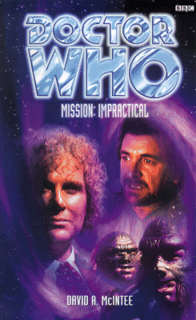

|
Mission: Impractical
|
BASIC PLOT DOCTOR The Valeyard is also present as a dark, shadowy, sinister presence. As far as we can tell. COMPANIONS MATERIALISATION CIRCUIT Pg 95 The TARDIS dematerializes as the HADS comes into operation. It reappears in the entry hatch to a gunboat slightly further along the ship, as we find out on Pg 101. PREPARATORY READING CONTINUITY REFERENCES Pg 15 "A polycarbide bolt had passed clean through him to embed itself in the wall." Daleks, according to the Doctor, had bonded polycarbide armour in Remembrance of the Daleks. Pg 17 "Look, Sha'ol, whatever it is you want, I can get. Money, a ship, vrax..." Vraxion, the universe's most stupid drug (what's the point of a drug that pretty much kills all users within hours? Drug dealers, as someone once pointed out, prefer not to have their buyers dead, just nearly so) first appeared in Nightmare of Eden. It pops up throughout this book, and I have not recorded every appearance. Pg 21 "Hey, with access to a TARDIS, I gotta see the seven hundred wonders of the universe. The walking mountains on Haskor, the great Sphinx on Mars, and Star Wars on the big screen." The seven hundred wonders of the universe are first mentioned in Death to the Daleks (broadcast four years before the first Star Wars film). They included the city of the Exxilons. Haskor is an unknown reference. The Sphinx on Mars may be a reference to the work of the Osirans from Pyramids of Mars. (Incidentally, by the time-period of Burning Heart, the Universe is down to a mere seven wonders.) Pg 23 "That Tarkin chap looked vaguely familiar, though. I think I met his granddaughter once." One of the silliest references ever. Grand Moff Tarkin was played by Peter Cushing, who also played the Doctor in the two Dalek films of the 1960s. His granddaughter, then, would be Susan (as played by Roberta Tovey). Heigh ho. Pg 31 "Nothing short of an Osiran or a Guardian could breach the TARDIS' defence shields while in flight." Pyramids of Mars and The Sands of Time for the former; The Ribos Operation, The Armageddon Factor, The Well-Mannered War, Mawdryn Undead, Terminus and Enlightenment for the latter. "Well, tell that to the two gun-toting maniacs heading this way looking for you. Maybe they'll disappear in a puff of logic." This is a misquote from The Hitchhikers' Guide to the Galaxy. Pg 32 "The Doctor continued. 'The TARDIS exists in a state of temporal grace. Weapons won't work in here.'" Temporal Grace has been off and on in the TARDIS for ages. It clearly is working here, but wasn't in Attack of the Cybermen. The Doctor has been trying to sort it out as far back as Arc of Infinity. "Suddenly the door behind him burst open, and a full-grown Kastrian leapt out." We saw Kastrians in The Hand of Fear. They are extinct now, but that doesn't stop Frobisher becoming one. Pg 37 "The planet had originally been colonized as a source of jethryk." This precious mineral is mentioned in The Ribos Operation. Pg 40 "He'd never liked the Veltrochni much; give him dialogue with a real political race like the Alpha Centauri any day of the week." A delegate from Alpha Centauri appeared in The Curse of Peladon, The Monster of Peladon and Legacy. In each case, even when only in the written word, it contrived to look like a penis. Pg 41 "After six months in a rehabilitation colony, he'd have to test that his charm was still working." Presumably this is what happened to Glitz after The Trial of a Time Lord, although not necessarily because that's where the Time Lords put him; it may have been the result so something else dodgy in which Glitz was involved. Pg 53 "Although the freighter had looked like an antiquated pile of junk from the outside, the interior was clean and sophisticated. The owner was probably either a smuggler trying to look inconspicuous, or a legitimate mark trying not to attract the attention of thieves." This is the Nosferatu, the ship Glitz is piloting in Dragonfire. And it's a great justification of the contrast between the outside and the inside of the ship as seen in that story. Pg 55 "'Ravolox! Of course. I remember now.' And that courthouse... This box had been there too. He realized belatedly that it must be the Doctor's TARDIS. He leaned aside to greet the Doctor's companion. 'And Mel, of-'" The Trial of a Time Lord. Glitz is a little perturbed by the presence of Frobisher, the penguin, instead of Mel, the eternal irritant. Pg 56 So where is Mel? asks Glitz: "Still at home in Pease Pottage, I sincerely hope. I haven't actually met her yet." He will, in Business Unusual, but spends much of his time in this incarnation trying to avoid doing so. See also Time of Your Life. "The last time we met, at my trial, Mel had been plucked out of the future of my timestream. Once we left, she was returned to her rightful place." We saw this happen at the end of the novelisation of The Ultimate Foe. "Which reminds me, what are you doing in this time period? We're a couple of million years too early for you, surely?" Glitz is now much closer to 'our' time than the Ravolox segment of The Trial of a Time Lord. It's never clear in exactly which periods the Doctor and Glitz meet, but we can assume that he occasionally hooks up with the Master again, and therefore could end up in a completely different time zone by the time we see him in Dragonfire (Set Piece, among other novels, implies that Dragonfire is 2 million years in the future). "Your old mate with the beard of evil arranged the transport for our little tickles." The last we saw of Glitz was him being trapped within the Matrix with the Master in The Trial of a Time Lord. Later information in this book explains his escape. I do like 'the beard of evil' as a description of the Master. Pg 57 "After that, the Time Lords sent me back to my rightful time, the ungrateful screeds." This (along with the previous page's idea that it was the Master who had brought Gliz to Ravalox's timeframe) would seem to imply that Glitz's natural time frame isn't the Ravalox one, but rather much earlier than that. Pg 63 "I am also, as it happens, the former President of Gallifrey." The Invasion of Time and The Five Doctors until just recently, actually. "Avan Tarklu. Native of the planet Xenon." This is Frobisher's real name, as you'd know if you read the comics. It's not used very often. For the record, McIntee states that this story occurs between the Marvel comics strips War Game and Fun House, which it's actually really difficult to square. See Continuity Cock-Ups. Pg 70 "She wondered what her ancestor, Brokhyth, would have done in this case." Brokhyth was the sire of Brythal, who appeared in The Dark Path. Pg 72 "He'd learned that lesson long ago, back on Salostophus, before he'd even met Sabalom Glitz." This is where both Glitz and Dibber hail from, according to The Trial of a Time Lord, Episodes 1-4 (The Mysterious Planet), and it appears to be somewhere near Andromeda (Glitz says he's from Salostophus, Dibber from Andromeda, but they're clearly from the same place). It's also Benny's destination in the prelude to Sanctuary published in DWM. "Everyone knows you Time Lords can put the 'fluence on people." The fourth Doctor often used hypnosis, particularly on Sarah Jane, and the Seventh has a funny knack with his own use of the Force. Pg 74 "The Doctor had earned some leniency back on Ravolox." The Trial of a Time Lord, Episodes 1-4 (The Mysterious Planet) again. "He looked pretty fit for a man who must be at least seventy. Probably a spectrox user, she noted. That in itself wasn't a crime, but spectrox was now so rare that a taxi mechanic being able to afford a dose was definitely grounds for suspicion." Spectrox was the drug involved in the shoot-'em-up that was The Caves of Androzani. It's now so rare probably because this book would seem to be set centuries after Caves, so supplies have probably dried up. (No clear date is given here, but the different levels of technology would imply this to be the case; if I'm wrong, then it's possible that the stories are exactly contemporaneous, and Spectrox supplies are short because of Morgus' stranglehold on its production.) Pg 82 "Your usual order - Rush, spectrox... but there's a couple of specials on offer. We've messed around with the PCM formula to come up with little individual hits." Rush is new, I think. Spectrox, as I mention, is from The Caves of Androzani. PCM was the tranquilliser in the air supply in The Sunmakers. Further down the page we get the purest vraxoin (Nightmare of Eden) known to exist. "In the Delphinus group, it's a seller's market. You could get a bargain price out in Andromeda." Andromeda was important in The Trial of a Time Lord. We have to assume that it's a centre of civilization for millions of years. Pg 90 "Despite the stories, space piracy was extremely rare. The simple fact was that it just wasn't profitable." Yet another reason not to watch The Space Pirates: the criminals in it appear to have been stupid as well as irritating. Pg 91 "Colman had once reverse engineered a Dalek time controller." We saw one of these in Remembrance of the Daleks. It looked just like one of those magic ball things with glowing blue lines in it, including having a power lead that plugged into the mains. Pg 92 "'Have you tried blasting it?' 'Blasting it?' the scientist echoed, annoyed. 'We've blasted it, burned it, drilled it, cut it... We've tried diamond and borazon drills, thermic lances, sonic lances, laser cutters, all of them useless.'" This is similar to the sequence in Four To Doomsday, when Monarch is trying, with equal lack of success, to break into the TARDIS. Pg 95 "The TARDIS was proving more resistant than dwarf star alloy." This very heavy metal is integral to the plot of Warriors' Gate. It also turns up, oddly, as an earring in Where Angels Fear. "Wei blinked. The TARDIS must have had some sort of defence mechanism that took it away from imminent danger." It does, it's called the HADS (Hostile Action Displacement System) and we first saw it work in The Krotons. Pg 97 "Artron energy readings." Karthakh locates the TARDIS through the fact that it gives off Artron energy, something that we first heard about in The Deadly Assassin. Pg 100 "Not Men, not Draconians, and most especially not the Metal Gods." The Draconians are from Frontier in Space, amongst others, and the Metal Gods are, of course, the Daleks. Pg 101 "When the races of Men had defeated the Metal Gods, many had wanted to destroy the Ogrons too." This would appear to be a reference to the war that followed Frontier in Space, although it may alternatively be a reference to The Daleks' Master Plan or War of the Daleks. All these references here would appear to be part of Ogron mythology, as, if it's recent history, the timeframe in this novel is confused at best. Pg 106 "He had once spent fourteen years of his life as a supermarket till in Walthamstow to be near the girl who worked there." Frobisher also makes this claim in the DWM comic strip Voyager. Pg 107 "'It's a Tzun.' 'Impossible!' Wei exclaimed. 'They all died out millennia ago.'" According to Lords of the Storm, that was during the 2170s. Both Sha'ol and Karthakh must have startlingly long lifespans (other references show that they met towards the end of the Tzun/Veltrochni War, which clearly occurred in that time period). Pg 115 "'My people have a knowledge of the Doctor,' Sha'ol said quietly, gazing into the distance in a manner Karthakh recognized. He was experiencing old memories that were as clear to him as the present." Presumably including the events of both First Frontier and Bullet Time. Another Tzun also appears in Return of the Living Dad. Interestingly, although Sha'ol speaks of the Doctor's mannerisms changing with each incarnation on Pg 116, in 'our' experience, only the Seventh Doctor has ever met them till now. Pg 127 The Maitre D' at the Cafe Terrestriale, is a computer-generated hologram of David Niven. Not continuity, but I thought it worth a mention. Pg 128 "All you have to do, hologram, is summon the owner of this establishment. Until you do, we are going to do our best to attract his attention ourselves." Up until this point in the novel, you are hoping against hope that you haven't read 128 pages that are a rip-off of the opening 40 minutes of the film, The Blues Brothers. Then you reach this point and realize that, yes, you have been. For the record this scene is nearly identical to a very famous scene in that film, where Jake and Elwood make a scene in a posh restaurant in order to get the owner to come out to see them. Pg 135 "You may have heard of me: the Bringer of Darkness? The Oncoming Storm?" Various names which the Doctor has been attributed with by Daleks and Draconians respectively (Timewyrm: Revelation, Love and War). This has become slightly confused recently, as, in The Parting of the Ways, the Doctor claims that his Dalek nickname, Ka Faraq Gatri, translates to 'The Oncoming Storm', when in fact, up until that point, it always meant 'The Bringer of Darkness'. Presumably, it can mean both things, and the meaning changes depending on how you pronounce it. "I've been tried more times than I can count by humans and twice by the Time Lords." The War Games and The Trial of a Time Lord, appropriately enough. "The Droge of Gabrielides once offered a whole star system for my head." The Doctor originally mentioned this in The Sunmakers. Pgs 135-136 The Doctor has been tried for "Oh, just the usual sort of things... Inciting civil war, Presidential assassination, piracy, interfering with the course of history, genocide... Nothing special, really." He was never actually tried for Presidential assassination, but he means The Deadly Assassin. Interfering with the course of history was both The War Games and The Trial of a Time Lord, whereas genocide was only in The Trial of a Time Lord. Pg 136 "'How did you get off with that?' 'Hmm?' The Doctor gave him a long look. 'I killed the Prosecutor.'" Actually, no he didn't, as the final scene in The Trial of a Time Lord proves, but at this point, the Doctor doesn't know that. He's also not about to find out, as well. Pg 140 "He had always hated competition, ever since reform school." Glitz's time at reform school was mentioned in The Trial of a Time Lord, Episodes 1-4 (The Mysterious Planet). The Doctor justifies what he said to Jack Chance: "I have been falsely tried." Actually, Doctor, that's a lie. The crime of genocide was, in fact, utterly fair, and you appear to have got away with it because the High Council felt it owed you a favour when you stopped them all being brutally killed. You're not exactly guilt-free when it comes to interference in the course of history now, either, are you? Let's be honest, you should be locked away in Shada until the end of all your lives, shouldn't you? Just because you ended up on the right side of a corrupt regime doesn't exactly make you innocent, does it? (Perhaps he's referring to various other times he's been falsely tried.) Pg 144 A new swear-word has apparently made its way into the English language: "What the fipe is she doing?" It's never made clear what it means, it appears twice in a few pages space, and then is never heard from again. Pg 146 "Who wants you dead badly enough that they'd fork out enough mazumas to buy their services?" The comic strip that introduced Frobisher, The Shape Shifter, involved someone offering a 250,000 Mazuma reward for the Doctor's whereabouts. They are also mentioned in the audio The Maltese Penguin. Pg 147 "Ten million years of time travel isn't common." Ten million years appears to be the rough length of Gallifreyan civilization, given that the Doctor uses this figure again to describe it, having previously done so in The Trial of a Time Lord in his memorable and remarkable speech in Episode 13. "I'm a Time Lord, Chance. I've faced down entire Dalek armies." Including The Dalek Invasion of Earth, The Evil of the Daleks, The Day of the Daleks and Resurrection of the Daleks. He would go on to do so again in the Time War that forms the prequel for the new series, and then again in The Parting of the Ways. Amongst numerous other occasions, I have no doubt. Pg 152 "Nobody invented diamonds, or machonite, or -" Machonite, amongst other things, was the main decorative feature of the location for the Doctor's trial in The Trial of a Time Lord. Pg 157 "'Chronodyne Industries, I think. Their head office is on Dronid, I believe.' The Doctor looked at him intently. 'Dronid? Are you quite sure of that?'" Dronid is first mentioned in Shada (it's Skagra's home planet), but became much more important to the Who mythos when it was revealed that it was the location of the Doctor's final death in Alien Bodies. Faction Paradox: The Book of the War also cites it as the location of the first battle of the War between the Time Lords and the Enemy. Pg 159 "Vraxoin... But no organic molecules, so they can't be breaking it down from Mandrels." This was how the drug was created in Nightmare of Eden. See also Continuity Cock-Ups. Pg 175 "Heera the Drahvin dismounted from her skybike on the roof of the Cafe Terrestriale." We've only ever seen Drahvins in Galaxy 4 beforehand. "Braunschweiger, one of the few Taran androids to have won their freedom, walked around the mezzanine level overlooking the main dining plaza." An android from Tara, from The Androids of Tara, obviously. Pg 178 "Glitz knew it was a sign that, in the words of the 20th-century philosopher, everything was going straight to hell." The philosopher in question is J Michael Straczynski, author and creator of the Babylon 5 series, in which characters overused the phrase 'straight to hell' strikingly often. Pg 179 Reference to polycarbide again, the metal which helps the Daleks to be so terribly powerful. Pg 191 "He also said he's nine hundred years old." This squares with what we know of the Doctor's age - he'll be 953 by Time and the Rani. Pg 192 "Meanwhile, the Doctor took a deep breath and snatched the silvered triangular polarisers out of the time dam one by one." The Time Dam is very similar to a set-up in The Pirate Planet. Meanwhile, the silvered and triangular nature of the polarisers makes one think of similar-looking devices in Timelash, which is never a good thing. Pg 204 "He shrugged. 'You crossed them, they crossed you, an adder got in the way, whatever.'" As Mandell explains his cunning plan, he makes reference to Arthurian legend: as Arthur and Mordred meet, finally, to agree terms, someone sees an adder about to kill the king, and draws his sword to kill it. Sadly, the baring of a weapon is taken the wrong way by the other side, who think it's a trap, and the fighting erupts anew. Before anyone has the chance to explain, most are dead. I think this is mentioned in the novelisation of Battlefield. Pg 205 "As you are so obviously fond of cliches, you may as well indulge in the one about revealing your master-plan before we die." Villains have been doing this since the dawn of time. That said, admitting it's a cliche in the prose is still not a clever enough way to get around the problem that Mandell does exactly what the Doctor asks him to do. I almost fell off my chair. Pg 212 "The hull is built of siligtone." Siligtone was the material out of which Drathro's Black Light Converter was made in The Trial of a Time Lord Episodes 1-4 (The Mysterious Planet). It's apparently very valuable, so it's probably a good job Glitz doesn't see Karthakh destroy huge amounts of it. Pg 215 "And Glitz was uncomfortably familiar with the exploits of Sha'ol and Karthankh. Second only to the mercifully deceased Ernie McCartney, they were the two most feared bounty hunters ever to be cursed by the inmates of prison asteroids." Ernie Eight-Legs McCartney appeared in Tragedy Day. Pg 228 "Froblisher acted instantly, puffing himself up into a ruddy reptilian form that oozed with acidic blubber. Every Ogron in the room screamed in terror." Frobisher would appear to be impersonating the Ogron God that was so wisely kept to the minimum possible screen-time in Frontier in Space, given that it looked like some sewn-together dustbin liners. It is equally wisely used sparingly here. Mention of Rutans (Horror of Fang Rock, Shakedown etc.), as well as the information that Rutans return to their natural state between forms. Pg 230 "'But this ship's a thousand years old...' 'So will I be fairly soon,' the Doctor reminded him." Again, the Doctor's age - although 'fairly soon' is at least 50 years off, given his age in Time and the Rani. Pg 232 "Prick me, do I not... ooze? Wrong me, shall I not come round your house with a baseball bat that's got nails in?" This is a massive misquote from Shakespeare's The Merchant of Venice. The first section is similarly misquoted by Data in the Star Trek: The Next Generation episode, The Naked Now. "That money talks I'll not deny, but last I heard, it said "goodbye"." The Doctor is now misquoting Richard Armour (it should be 'That money talks I'll not deny. I heard it once: it said "goodbye"'), although presumably he is misquoting deliberately. Pg 249 "Time rings. That's how they got into the TARDIS." We first saw Time Rings in Genesis of the Daleks, although chronologically they go back as far as the Second Doctor flashback in Players (set immediately after The War Games). "The dismissal of charges at my trial wasn't universally appreciated. I don't doubt for a moment that there are some members of the High Council and the Celestial Intervention Agency who consider me something of an embarrassment." Actually, although the Doctor never realizes it, and you have to read between the lines, he could be totally wrong about his persecutor, given that it's probably the Valeyard, seemingly fairly soon after The Trial of a Time Lord. We first see the High Council in The Three Doctors (or so it is generally acknowledged) and we first hear of the CIA in The Deadly Assassin. "'It's a rather neat copy of some Gallifreyan technology.' 'I thought it came from Dronid?' 'I'm sure it did. But Dronid was once home to a rival faction who left Gallifrey.'" As we learned in Shada. Alien Bodies gives us much more information about Dronid but, that said, there's absolutely no direct connection between Mission: Impractical and Alien Bodies, although there's an attempt to make you think that there is. Pg 250 "Everything that I or the TARDIS experience is fed into the Matrix." The Doctor only recently learned that his TARDIS had been bugged - he found out in The Trial of a Time Lord. He appears OK with it now that it can be used to his advantage. Pg 257 "'He could be faking it,' the voice warned, raising Frobisher's hopes. 'We - he has the ability to stop his hearts, and also possesses a respiratory bypass system.'" We first saw the Doctor's respiratory bypass system in Pyramids of Mars, but since then he has used it to fake his own death in The Two Doctors, Timewyrm: Genesys, The Fall of Yquatine and Parallel 59 amongst others. The 'we' in this line, by the by, is the main clue that we could be dealing with the Valeyard, although it could also, of course, refer to any Time Lord. Pg 259 "'Half a millisecond,' Glitz protested. 'You're dead!'" This is Glitz's speech patterns exactly as seen on-screen. Pg 266 "Even a blind speelsnape couldn't miss this time." Speelsnapes were mentioned in Revelation of the Daleks. The spelling here is consistent with that of Revelation's author, Eric Saward, when he wrote about them in Slipback, although some NA authors have incorrectly spelled the delightful creature as 'spielsnape'. Which in fairness, may be a different creature entirely. Pg 267 "A host of possible last-minute pleas and dying declarations crossed Cronan's mind in nanoseconds, until the most appropriate and heartfelt one could find its way to his lips. 'Bugger.'" This is very similar to a sequence in the final episode of Blackadder Goes Forth, where Captain Darling comments 'Made a note in my diary on the way here. Simply said: Bugger.' Pg 271 "'I met your... ancestor along with my companions Jamie and Victoria. Brokhyth's daughter Brythal was on board -' It was him! Brokhal knew that instantly. Nobody else could have known these things about her family's contact with the Doctor." It happened in The Dark Path. Pgs 276-277 "I suspect that you know how I helped Pack Zanchyth bring justice to those who destroyed Pack Huthakh." The Dark Path again. Pg 279 "Jack examined his smoking drink closely, wondering if something in it was making him hear things. It was a Morestran concoction, so there was no telling what was in it." When we met the Morestrans, in Planet of Evil, Sorenson's 'cure' for the anti-matter plague was also a smoking drink. Mention of a Terileptil called Korled. We met Terileptils in The Visitation. OLD FRIENDS AND OLD ENEMIES Mr Zimmerman, the shadowy figure trying to have the Doctor killed, may well turn out to be The Valeyard in disguise, also from The Trial of a Time Lord. The Valeyard's existence had a huge influence on the Sixth Doctor novels, and, arguably, in how the NAs developed. The Valeyard himself would go on to appear again in Millennial Rites (then as an aspect of the Doctor, rather than a character in his own right) and in Matrix. NEW FRIENDS AND NEW ENEMIES Pack Leader Lothkash. The assassins are Sha'ol, a S'Raph Tzun, and Karthakh, a Veltrochni from Pack Lorkhal. Captain Handley. Niccolo Mandell and his wife, Kala. The President of Vandor Prime, his press secretary, Klein and various other members of the parliament including the Attorney General and the Defense Minister. Veltrochni ambassador Brokhal and her son Trelokh. Jemsen, a love-struck policeman. A mysterious man wanting a lift, and Kallas, his lift. Captain Franke and his number two, Lambert. Kapra, on the Thor facility. A Professor Hoffman, whom the Doctor impersonates.
CONTINUITY COCK-UPS PLUGGING THE HOLES [Fan-wank theorizing of how to fix continuity cock-ups] FEATURED ALIEN RACES Sha'ol is the last of the S'Raph Tzun, who have previously appeared in First Frontier and Bullet Time. They, also, are mentioned in Lords of the Storm. They are short and grey are, to all intents and purposes, the 'greys' that the X-Files made famous. Their home planet was called S'Arl, before it was destroyed by the Veltrochni. At least some Tzun, including Sha'ol, have genetically enhanced memories, although this would seem only to be (some of) the pure-breed S'Raphs. At least one other branch of Tzun appear to exist, the Ph'Sor Tzun, but they are half-breeds. Frobisher is a Whifferdill, as is Oskar. Ogrons, many and varied, although all the ones we meet here end up dead. The race first appeared in Day of the Daleks. Their home planet is called Orestes, although the Orgons refer to it as Braah. This is actually a little racist on behalf of the rest of the Universe - the Ogrons might be stupid, but you should still do them the courtesy, surely, of referring to their planet by the name they give it. We wouldn't like it if someone came along and said 'Actually, you might call it Earth, but it's actually Qualipafatorius Minor,' now would we? The bounty hunters who come to find the Doctor include a Drahvin, a Taran android and a Keratian. FEATURED LOCATIONS The time period of the book never gets exactly specified, but it would appear to be some millennia in the future - certainly long after the Dalek wars. McIntee presumably deliberately keeps it vague, but credulity is stretched, particularly as regards the life-spans of Sha'ol and Karthakh. The places are: A bar, somewhere. A convenient conference area, where the two assassins discuss terms with their mysterious employer. If this is the Valeyard, it's possibly within the Matrix itself. Hollywood, 1977. Vandor Prime, the fourth planet out from the star Gamma Delphinus, with a capital called Neo Delphi. There is, in said capital, an area called Methuselah Town. Also on this planet, we visit the Delphic Circus, the Cafe Terrestriale, and the Presidential Offices in the capital city. The Third Moon of Vandor Prime. The Thor Orbital facility The planet Elchor, a former agrarian colony destroyed by biochemical weapons The shipyards at Teal Alpha get a mention Oblio I, in the Oblio system And the story ends as it began, on Veltroch The many ships on which the action takes place include: The Vandorian cutter Thornton. The Veltrochni Dragon Thazrakh. The Speculator. Introducing Sabalom Glitz's spacecraft, the Nosferatu. The Frigate Cobb. The good ship Mead. The Veltrochni Dragon Zathakh. The Interceptor Hornet. IN SUMMARY - Anthony Wilson |
|
 |